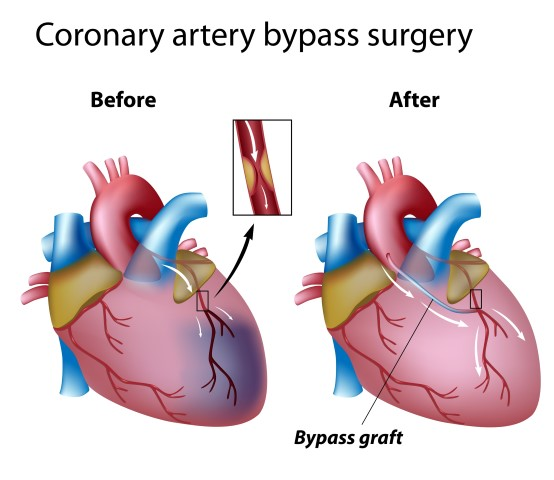

DEFINITION OF BYPASS SURGERY
A heart bypass is when a coronary artery is blocked and an alternative channel is created in order to improve the circulation. Bypass surgery is usually performed in order to treat coronary artery disease.
Coronary heart disease is considered one of the most common types of heart disease. It affects the individuals by narrowing the bloodflow, oxygen, and the nutrients provided to the heart and arteries. It narrows the pathways by depositing a buildup of cholesterol, fat, and other substances along the pathways. This buildup is identified as plaque. In addition to narrowing the arteries, it causes symptoms such as shortness of breath, angina, and when completely blocked will cause heart attacks.
